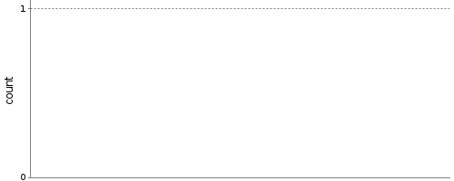
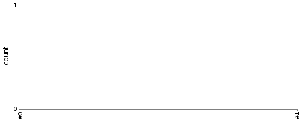

Configure the trend graph of this plug-in for the current job and user. These values are persisted in a cookie, so please make sure that cookies are enabled in your browser.
Distribution of new and fixed warnings

Priority distribution of all warnings
Total number of warnings
Number of warnings colored according to the health report thresholds
Difference between new and fixed warnings (cumulative)

No trend graph